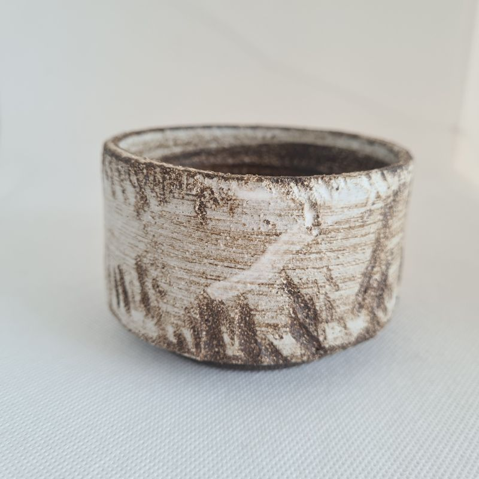

Melba mug

Made of brown clay with a high-fire white glaze. Dishwasher and microwave safe, but in order to make the mug stay in its original shape wash by hand. Free of harmful substances, food safe. Capacity: 2 dl. All of our products are unique and handmade, so they are not exactly the same. There may be minor differences in color which makes them even more special.